No containers. White, a 12-column grid, 1 px black rules, one family at five sizes, tabular numerals everywhere, and a single Swiss red that appears only on the marker and the page you are on. The manual's table of contents is not styled into the app — it is the app. Different because it spends nothing: no cards, no fills, no shadows, no second typeface, and the page number sits on the same grid line on all four screens.
| token | value | use |
|---|---|---|
| --w | #FFFFFF | ground and the PDF sheet — same white |
| --w2 | #F2F2F0 | the 3D plate only |
| --k | #000000 | type, structural rules |
| --k30 | #B8B8B6 | list rules (lighter than structure) |
| --k60 | #6E6E6E | meta, chapter words, years |
| --red | #E4002B | marker, current page, crosshair. only |
| --mark | rgba(228,0,43,.14) + 2px rule | wash + a margin rule on the grid |
| radius | 0 · shadows none | no depth anywhere |
| grid | 12 col · gutter 16 · margin 16 | page no. always in the last 34px |
| type | Inter Tight 400/500/600 | one family, no exceptions |
| scale | 11 · 13 · 15 · 24 · 34 · 44 | five sizes, tabular numerals |
| tracking | −.035em at 34px · +.14em at 11px | the only ornament |
| motion | 120ms opacity | nothing moves; things appear |
| motion | 200ms width | marker wash widens L→R, no stagger |
The model sits on a flat grey plate that is flush with the grid — no border radius, no shadow, no controls chrome; the three actions are text, underlined in red when live. The chosen part is not tinted or ringed: two 1 px red rules run the full width and height of the plate and cross on it, with a 9 px red square at the intersection. It reads as a measurement on a drawing, and it works at any model scale because the rules always reach the edges.
MarkerA 14% red wash over the marked band plus a 2 px red rule 9 px into the sheet's left margin, aligned with the app's own left column. The wash widens L→R in 200 ms with no stagger. Because red appears nowhere else on any screen, the marker is findable at arm's length even though it is the quietest of the five.
RiskIt has no personality of its own on purpose, which reads as unfinished to anyone expecting a brand; and pure white at full brightness is hostile in a dark garage — this direction needs a dark mode before it ships, which is the one thing the other four get for free.
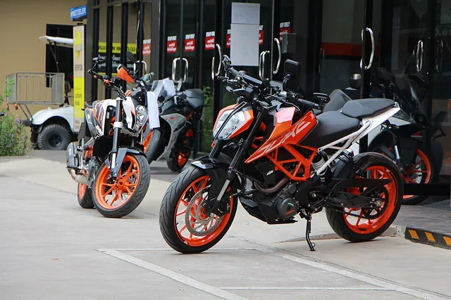
KTM 390 Duke2011–2025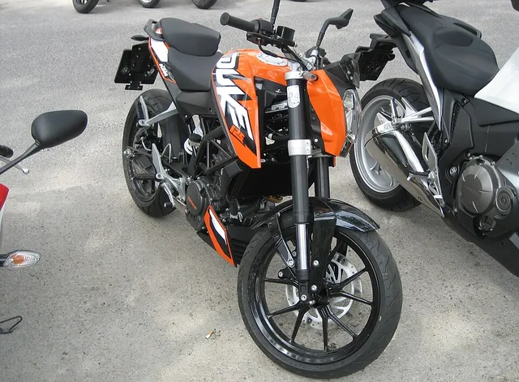
KTM 125 Duke2011–2025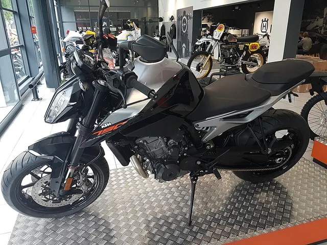
KTM 790 Duke2018–2025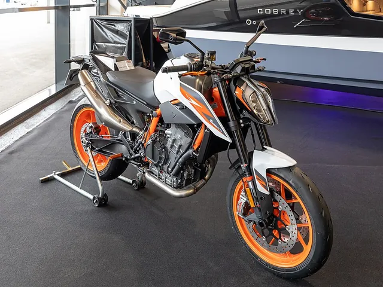
KTM 890 Duke2020–2025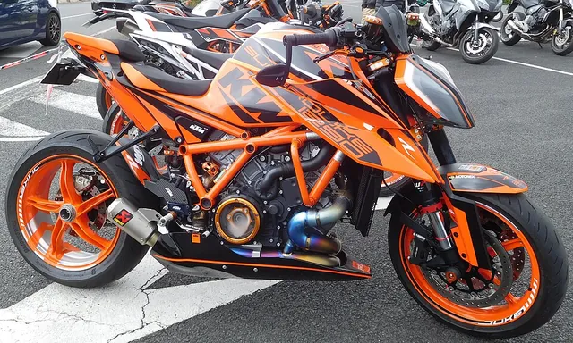
KTM 1290 Super Duke R2014–2025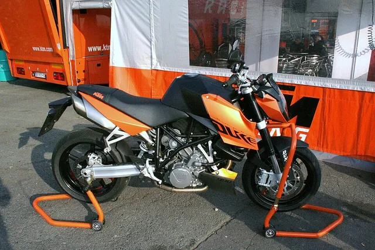
KTM 990 Duke2024–2025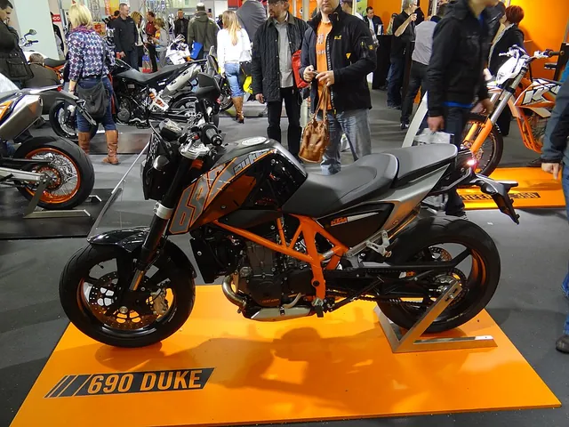
KTM 690 Duke2008–2025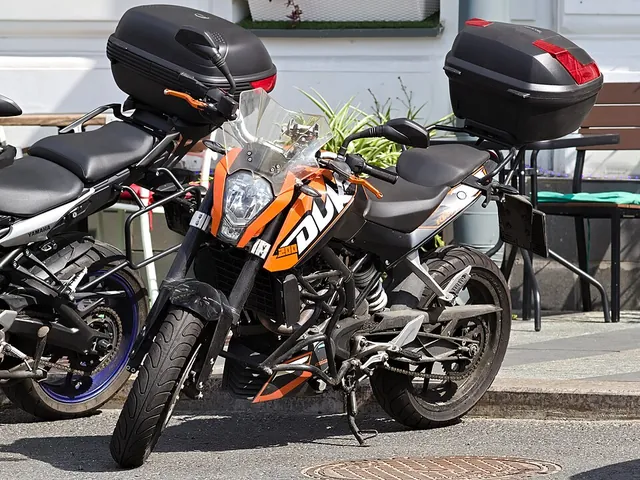
KTM 200 Duke2012–2023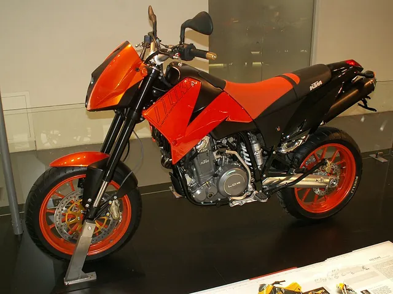
KTM 640 Duke II1999–2006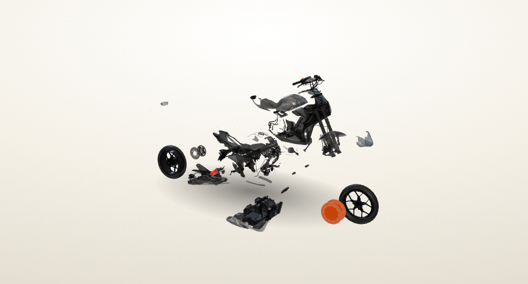
Exploded Front brake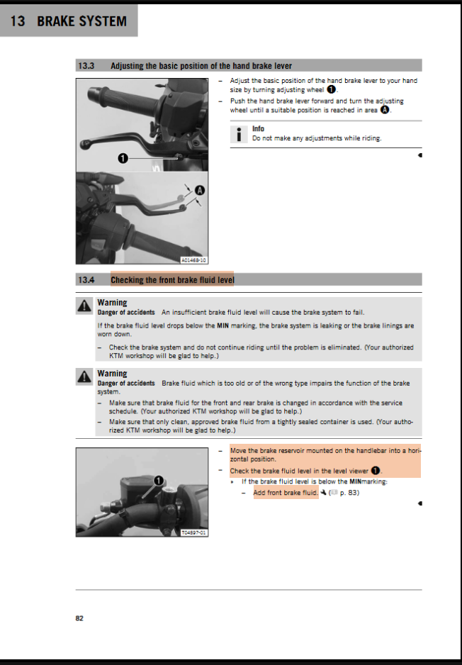
Move the brake reservoir mounted on the handlebar into a horizontal position. Check the brake fluid level in the level viewer ❶.
Minimum thickness ≥ 1 mm (≥ 0.04 in)
Brake fluid DOT 4 / DOT 5.1